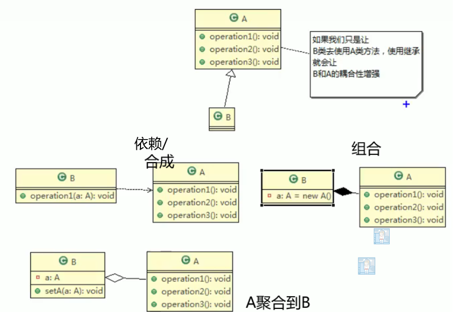
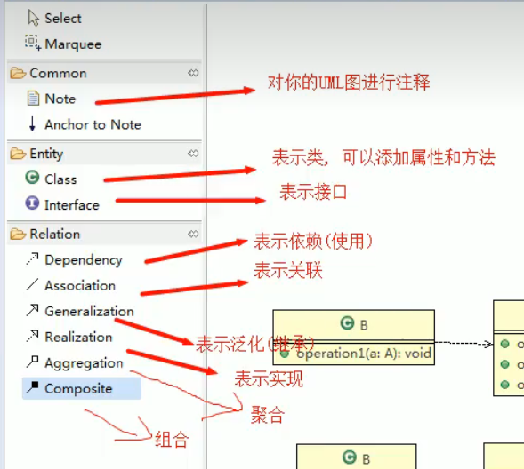

跟着该视频做的一个笔记尚硅谷 Java 设计模式（图解 + 框架源码剖析）
# 设计模式
# 1 设计模式的目的
编写软件过程中，程序员面临着来自耦合性，内聚性以及可维护性，可扩展性，重用性，灵活性等多方面的挑战，设计模式是为了让程序 (软件)，具有更好的
- 代码重用性 (即：相同功能的代码，不用多次编写)
- 可读性 (即：编程规范性，便于其他程序员的阅读和理解)
- 可扩展性 (即：当需要增加新的功能时，非常的方便，称为可维护)
- 可靠性 (即：当我们增加新的功能后，对原来的功能没有影响)
使程序呈现高内聚，低耦合的特性
# 2 设计模式七大原则
设计模式原则，其实就是程序员在编程时，应当遵守的原则，也是各种设计模式的基础 (即：设计模式为什么这样设计的依据)
设计模式常用的七大原则有:
# 2.1 单一职责原则（Single Responsibility Principle）
- 降低类的复杂度，一个类只负责一项职责
- 提高类的可读性，可维护性，降低变更引起的风险
- 通常情况下，我们应当遵守单一职责原则，只有逻辑足够简单，才可以在代码级违反单一职责原则；只有类中方法数量足够少，可以在方法级别保持单一职责原则
对类来说的，即一个类应该只负责一项职责。如类 A 负责两个不同职责：职责 1，职责 2。当职责 1 需求变更而改变 A 时，可能造成职责 2 执行错误，所以需要将类 A 的粒度分解为 A1，A2
# 2.2 接口隔离原则（Interface Segregation Principle）
客户端不应该依赖它不需要的接口，即一个类对另一个类的依赖应该建立在最小的接口上
也就是说接口要细拆分，类只需要实现相关的接口，不需要实现用不到的
# 2.3 依赖倒转 (倒置) 原则（Dependence Inversion Principle）
- 高层模块不应该依赖低层模块，二者都应该依赖其抽象
- 抽象不应该依赖细节，细节应该依赖抽象
- 依赖倒转 (倒置) 的中心思想是面向接口编程
- 依赖倒转原则是基于这样的设计理念：相对于细节的多变性，抽象的东西要稳定的多。以抽象为基础搭建的架构比以细节为基础的架构要稳定的多。在 java 中，抽象指的是接口或抽象类，细节就是具体的实现类
- 使用接口或抽象类的目的是制定好规范，而不涉及任何具体的操作，把展现细节的任务交给他们的实现类去完成
依赖倒转原则的注意事项和细节
- 低层模块尽量都要有抽象类或接口，或者两者都有，程序稳定性更好，最好不要一个类孤零零的
- 变量的声明类型尽量是抽象类或接口，这样我们的变量引用和实际对象间，就存在一个缓冲层，利于程序扩展和优化
- 继承时遵循里氏替换原则
# 2.4 里氏替换原则（Liskov Substitution Principle）
OO 中的继承性的思考和说明：
继承包含这样一层含义：父类中凡是已经实现好的方法，实际上是在设定规范和契约，虽然它不强制要求所有的子类必须遵循这些契约，但是如果子类对这些已经实现的方法任意修改，就会对整个继承体系造成破坏。
继承在给程序设计带来便利的同时，也带来了弊端。比如使用继承会给程序带来侵入性，程序的可移植性降低，增加对象间的耦合性，如果一个类被其他的类所继承则当这个类需要修改时，必须考虑到所有的子类，并且父类修改后，所有涉及到子类的功能都有可能产生故障
问题提出：在编程中，如何正确的使用继承？=> 里氏替换原则
在使用继承时，遵循里氏替换原则，在子类中尽量不要重写父类的方法
里氏替换原则告诉我们，继承实际上让两个类耦合性增强了，在适当的情况下，可以通过聚合，组合，依赖来解决问题。
# 2.5 开闭原则 (Open Closed Principle)
开闭原则是编程中最基础、最重要的设计原则
一个软件实体如类、模块和函数应该对扩展开放 (对提供方)，对修改关闭 (对使用方)。用抽象构建框架，用实扩展细节。
当软件需要变化时，尽量通过扩展软件实体的行为来实现变化，而不是通过修改已有的代码来实现变化
# 2.6 迪米特法则（Demeter Principle）
迪米特法则的核心是降低类之间的耦合。由于每个类都减少了不必要的依赖，因此迪米特法则只是要求降低类间 (对象间) 耦合关系， 并不是要求完全没有依赖关系
迪米特法则又叫最少知道原则，即一个类对自己依赖的类知道的越少越好。也就是说，对于被依赖的类不管多么复杂，都尽量将逻辑封装在类的内部。对外除了提供的 public 方法，不对外泄露任何信息。迪米特法则还有个更简单的定义：只与直接的朋友通信
直接的朋友：每个对象都会与其他对象有耦合关系，只要两个对象之间有耦合关系，我们就说这两个对象之间是朋友关系。耦合的方式很多，依赖，关联，组合，聚合等。其中，我们称出现成员变量、方法参数、方法返回值中的类为直接的朋友，而出现在局部变量中的类不是直接的朋友。也就是说，陌生的类最好不要以局部变量的形式出现在类的内部。
# 2.7 合成复用原则 (Composite Reuse Principle)
原则是尽量使用合成 / 聚合的方式，而不是使用继承

# 2.8 设计模式的原则核心
找出应用中可能需要变化之处，把它们独立出来，不要和那些不需要变化的代码混在一起。
针对接口编程，而不是针对实现编程。
为了交互对象之间的松耦合设计而努力。
# 3.UML 类图
# 3.1 基本介绍

# 3.2 类图分类
- 用例图（use case）
- 静态结构图: 类图、对象图、包图、组件图、部署图
- 动态行为图：交互图 (时序图与协作图)、状态图、活动图
# 3.3 类之间的关系
依赖、泛化（继承）、实现、关联、聚合、组合
# 依赖
只要类中用到了对方，则构成依赖关系
类成员属性、方法返回类型、方法参数接受的参数类型、方法中使用到
# 泛化（继承）
继承，依赖关系的特例
# 实现
接口实现，依赖关系的特例
# 关联
类与类之间的联系，依赖关系的特例
# 聚合
表示整体和部分的关系，整体和部分能分开，关联关系特例（private A；）
如果不能分开，则升级为组合关系（private A = new A（）；）
# 组合
整体和部分不能分开
# 4. 设计模式概述
设计模式分为三种类型，共 23 种（？）
- 创建型模式：<u> 单例模式 </u>、抽象工厂模式、原型模式、建造者模式、<u > 工厂模式 </u>
- 结构型模式：适配器模式、桥接模式、<u> 装饰模式 </u>、组合模式、外观模式、享元模式、<u > 代理模式 </u>
- 行为型模式：模版方法模式、命令模式、访问者模式、迭代器模式、<u> 观察者模式 </u>、中介者模式、备忘录模式、解释器模式 (Interpreter 模式)、状态模式、策略模式、职责链模式 (责任链模式)
# 单例模式
单例模式有八种方式
# 饿汉式 (静态常量)
// 饿汉式（静态变量） | |
// 用之前就创建 | |
class Singleton { | |
// 构造器私有化，外部不能 new | |
private Singleton() { | |
} | |
// 本类内部创建对象实例 | |
private final static Singleton instance = new Singleton(); | |
// 提供一个公有的静态方法，返回对象实例 | |
public static Singleton getInstance() { | |
return instance; | |
} | |
} |
避免了线程同步问题，但是没实现懒加载，可能会造成内存浪费
# 饿汉式 (静态代码块)
…… | |
// 静态代码块 | |
static { | |
instance = new Singleton(); | |
} | |
…… |
# 懒汉式 (线程不安全)
class Singleton02 { | |
// 构造器私有化，外部不能 new | |
private Singleton02() { | |
} | |
private static Singleton02 instance; | |
// 提供一个静态的公有方法，当使用到该方法时，才去创建 | |
// 饿汉模式 | |
//synchronized, 解决线程同步问题，但是效率低，后续获取都要进行同步 | |
public static synchronized Singleton02 getInstance() { | |
if (instance == null) | |
instance = new Singleton02(); | |
return instance; | |
} | |
} |
# 懒汉式 (线程安全，同步方法)
synchronized //效率低，不使用
# 懒汉式 (线程安全，同步代码块)
public static synchronized Singleton02 getInstance() { | |
if (instance == null){ | |
// 当多个现程进入后，即使一个个来，但是还是会选择创建，不使用 | |
synchronized (Singleton02.class) { | |
instance = new Singleton02(); | |
} | |
} | |
return instance; | |
} |
# 双重检查
public static synchronized Singleton02 getInstance() {
if (instance == null) {
synchronized (Singleton02.class) {
if (instance == null)
instance = new Singleton02();
}
}
return instance;
}
# 静态内部类
class Singleton03 { | |
// 构造器私有化，外部不能 new | |
private Singleton03() { | |
} | |
// 当外部类被装载时，静态内部类并不会装载 | |
// 当静态内部类装载时，是线程安全 (JVM 底层提供的机制) | |
private static class SingletonInstance { | |
private static final Singleton03 singleton = new Singleton03(); | |
} | |
public static synchronized Singleton02 getInstance() { | |
return Singleton02.getInstance(); | |
} | |
} |
# 枚举
借助 JDK1.5 中添加的枚举类实现，不仅避免多线程同步问题，而且防止反序列化重新创建新的对象
enum Singleton04 { | |
INSTANCE; // 属性 | |
public void sayLove() { | |
System.out.println("heart~"); | |
} | |
} |
# 单例模式注意事项和细节说明
- 单例模式保证了 系统内存中该类只存在一个对象，节省了系统资源，对于一些需要频繁创建销毁的对象，使用单例模式可以提高系统性能
- 当想实例化一个单例类的时候，必须要记住使用相应的获取对象的方法，而不是使用 new
- 单例模式使用的场景：需要频繁的进行创建和销毁的对象、创建对象时耗时过多或耗费资源过多 (即：重量级对象)，但又经常用到的对象、工具类对象、频繁访问数据库或文件的对象 (比如数据源、session 工厂等)